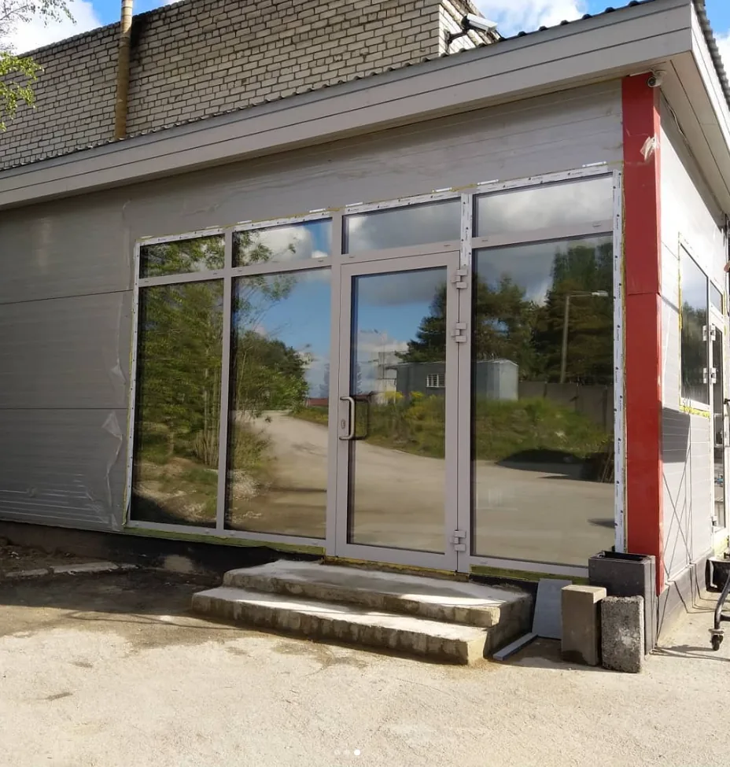
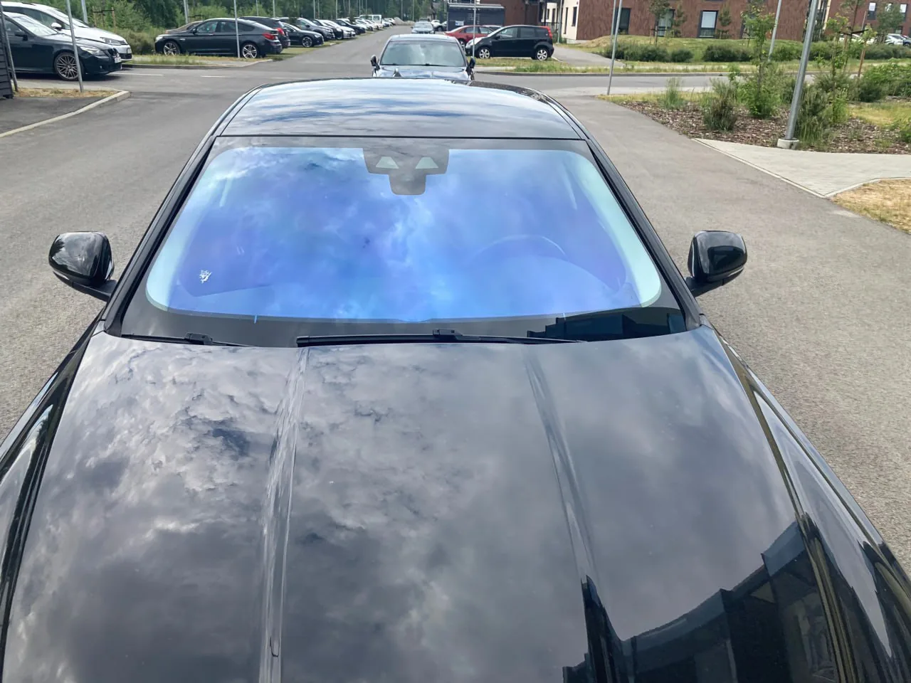

Солнце и жара
Солнцезащитная пленка снижает нагрев, уменьшает блики и делает помещение комфортнее.

Устанавливаем пленки на окна, витрины, стеклянные двери и перегородки. Солнцезащита, приватность, матовые, декоративные и защитные пленки.

Сначала определяем проблему: жара, блики, приватность, декор или защита. Потом подбираем тип пленки, который реально решает задачу для дома, офиса, витрины или перегородки.
Подобрать пленкуСолнцезащитная пленка снижает нагрев, уменьшает блики и делает помещение комфортнее.
Закрывает обзор снаружи для первых этажей, кабинетов, салонов, офисов и частных домов.
Подходит для дверей, перегородок и переговорных: свет остается, лишний обзор пропадает.
Полосы, узоры, элементы бренда и визуальное оформление стекла без замены конструкции.
Пленка укрепляет стекло и помогает удерживать осколки при повреждении.
Для частного дома важен комфорт и приватность, для офиса — переговорные и перегородки, для витрины — солнце, безопасность и внешний вид.
Меньше нагрева, бликов и лишних взглядов — без затемнения помещения “в ноль”.
Матовые и приватные пленки для стеклянных дверей, перегородок и рабочих зон.
Солнцезащита, декоративные элементы, логотипы и дополнительная защита стекла.
Аккуратная установка на готовые стеклянные конструкции без замены стекла.
Для предварительного расчета достаточно фото, размеров и короткого описания задачи. Дальше подбираем пленку и согласуем установку.
Вы отправляете фото окна, витрины, двери или перегородки, а также примерные размеры стекла.
Уточняем, где будет пленка: квартира, дом, офис, витрина, салон, магазин или коммерческое помещение.
Подбираем солнцезащитную, матовую, декоративную, приватную или защитную пленку под вашу задачу.
Даем предварительную цену, при необходимости приезжаем на замер и выполняем установку.
Визуальные примеры для витрин, стекла, помещений и объектов. Если нужно больше архитектурных фото, их можно будет добавить после выгрузки со старого сайта.


Для предварительного расчета достаточно отправить фото стекла, примерные размеры и коротко описать задачу.